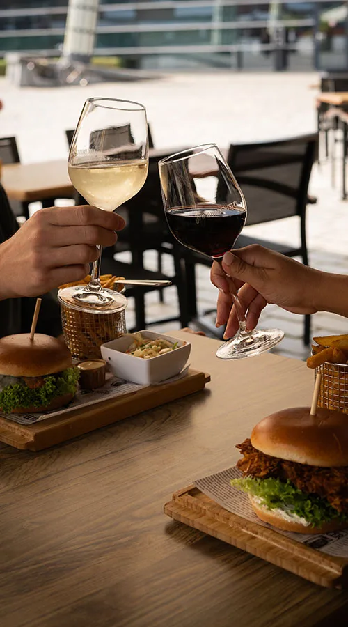
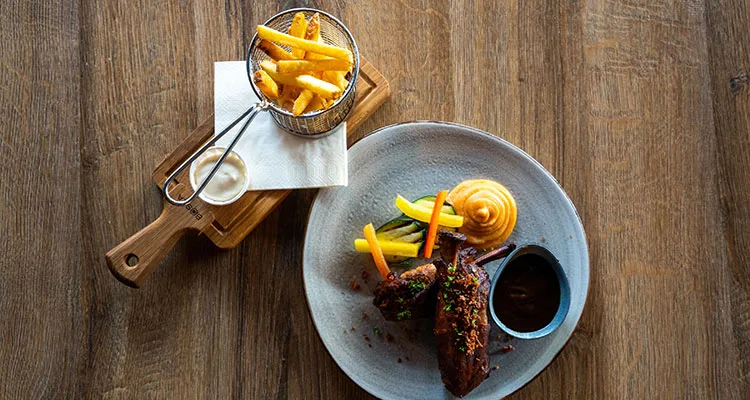
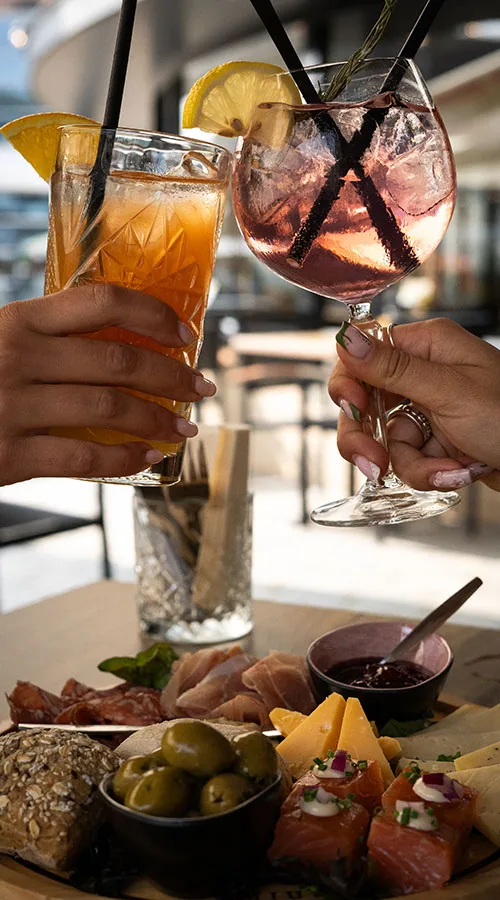
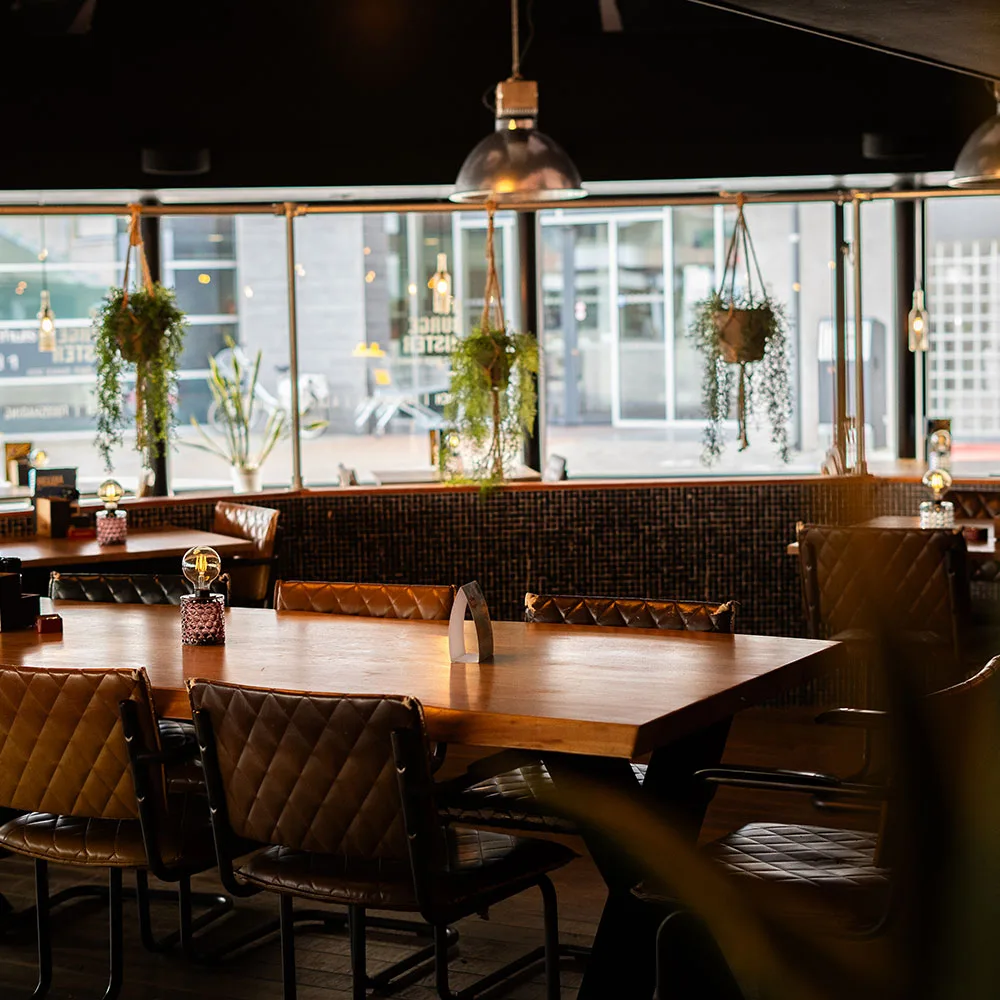
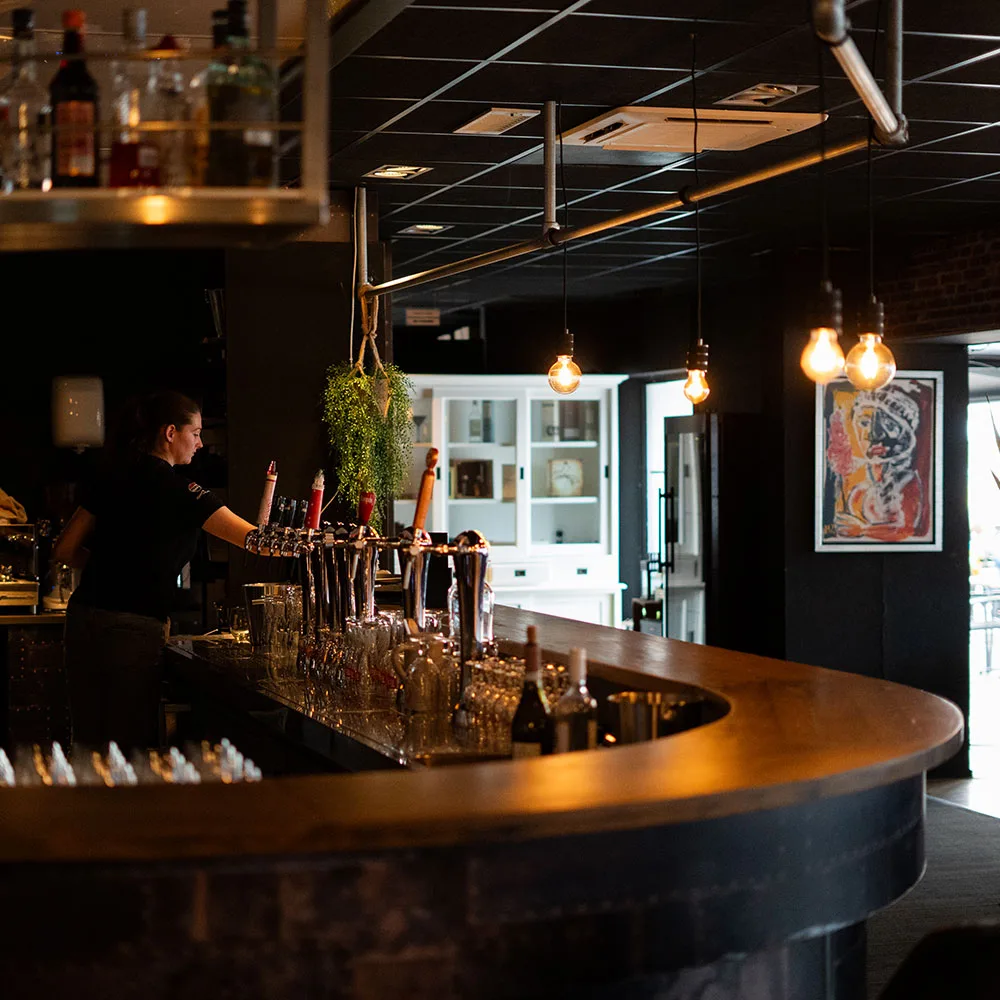
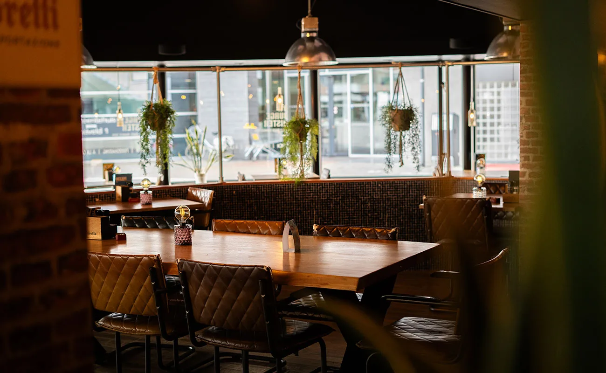

Dinsdag t/m zondag vanaf 12:00 uur open
D’n Burgemister
Voor een smakelijke lunch en diner of gewoon een drankje doen. In het Citycentrum van Veldhoven, naast Theater de Schalm.

’s middagsLunchBroodjes, tosti’s, salades, huisgemaakte soepen en burgers
à la carteDinerVlees, vis, plates, maaltijdsalades en de huisgemaakte burgers
bites tot 21:00Drankje doenBier op tap, lokaal bier van Van Moll, wijn en borrelplankenReserveer een tafeltje
Voor een lunch, een uitgebreid diner of een borrel met vrienden. Reserveren kan online, per telefoon uiteraard ook.
De kaart
vega vegetarisch vegan veganistisch. Allergieën of dieetwensen? Laat het weten aan een van onze medewerkers!

Iets te vieren?
Heb je iets te vieren of misschien een besloten vergadering? Of gewoon knus met een vriendengroep? Ons restaurant naast de Schalm in Veldhoven, met een ruime parkeerplaats, is de perfecte locatie voor:
- Lunch
- Diner
- Receptie
- Walking dinner
- Feestje
- Zakelijk evenement
- Vergadering
- Bedrijfsfeest
Zakelijke evenementen, vergaderingen of een bedrijfsfeest verzorgen we graag.
Over ons
Restaurant D’n Burgemister opende in september 2017 haar deuren, in het Citycentrum naast Theater de Schalm.
Onder leiding van Paul staat het team graag voor u klaar! U kunt bij ons terecht voor een lunch, borrel of uitgebreid diner. Hierbij kunt u genieten van onze à la carte kaart.
Het restaurant verzorgt tevens de foyer catering in De Schalm.
- Sinds
- 2017
- Buren
- Theater de Schalm
- Parkeren
- Ruime parkeerplaats


Kom langs
D’n BurgemisterMeiveld 3A
5501 KA Veldhoven
- Telefoon040 - 254 14 75
- E-mailinfo@burgemister.nl
- Volg onsFacebook Instagram
Openingstijden
| Maandag | gesloten |
|---|---|
| Dinsdag | 12:00 – 22:00 |
| Woensdag | 12:00 – 22:00 |
| Donderdag | 12:00 – 22:00 |
| Vrijdag | 12:00 – 00:00 |
| Zaterdag | 12:00 – 00:00 |
| Zondag | 12:00 – 22:00 |
Burgemister Bites: 12:00 – 21:00 uur